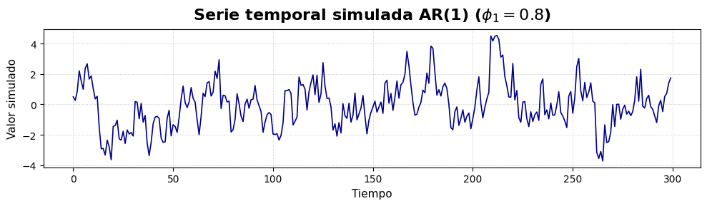
Análisis de Series de Tiempo en Finanzas
Resumen: En este notebook presento un análisis reproducible de series de tiempo aplicado a datos financieros. Incluye descarga de datos desde Yahoo Finance, cálculo de log-retornos, ajuste y selección de modelos ARMA/ARIMA, y modelado de volatilidad con GARCH. El objetivo es mostrar técnicas de modelado, evaluación y visualización que pueda incluir en mi portfolio técnico.
Habilidades demostradas: Data wrangling, visualización, modelado ARMA/ARIMA, selección de modelos, modelado de volatilidad (GARCH), y reproducibilidad de análisis.
1. Simulación de modelos ARMA
Los modelos de análisis de series temporales \(AR(n)\), \(MA(q)\) y \(ARMA(n,q)\) contienen la estructura básica para predecir valores de una serie.
Modelo \(AR(n)\) – Autorregresivo de orden \(n\)
Definición: Un modelo \(AR(n)\) predice el valor actual de una serie temporal como una combinación lineal de sus \(n\) valores pasados más un término de error aleatorio.
Ecuación general:
\[ X_t = \phi_1 X_{t-1} + \phi_2 X_{t-2} + \dots + \phi_n X_{t-n} + \epsilon_t \]
Donde:
- \(X_t\) → valor actual de la serie.
- \(\phi_1, \dots, \phi_n\) → coeficientes del modelo (a ajustar con
datos).
- \(n\) → orden del modelo (cuántos valores pasados se usan).
- \(\epsilon_t\) → ruido blanco (error aleatorio con media cero y varianza
constante).
Características: - Solo depende de valores pasados.
- Requiere que la serie sea estacionaria (media y varianza constantes).
- Se usa para capturar correlaciones a corto plazo.
Ejemplo práctico: Si \(n=1\) (\(AR(1)\)):
\[ X_t = \phi_1 X_{t-1} + \epsilon_t \]
Aquí el valor actual depende solo del valor anterior más un ruido aleatorio.
Modelo \(MA(q)\) – Media Móvil de orden \(q\)
Definición: Un modelo MA(q) representa el valor actual como una combinación lineal de errores pasados.
\[ X_t = \epsilon_t + \theta_1 \epsilon_{t-1} + \dots + \theta_q \epsilon_{t-q} \]
Donde:
- \(\theta_1, \dots, \theta_q\) → coeficientes de los errores pasados.
- \(\epsilon_t\) → ruido blanco.
Característica clave:
- Captura la dependencia en los errores pasados en lugar de los valores pasados.
Modelo \(ARMA(p,q)\) – Combinación \(AR\) y \(MA\)
Definición: El modelo ARMA(p, q) combina ambos enfoques: autorregresivo (AR) y media móvil (MA). Se usa para series estacionarias que tienen dependencias tanto en valores pasados como en errores pasados.
Ecuación general:
\[ X_t = \phi_1 X_{t-1} + \dots + \phi_p X_{t-p} + \epsilon_t + \theta_1 \epsilon_{t-1} + \dots + \theta_q \epsilon_{t-q} \]
Donde:
- \(p\) → orden de la parte \(AR\).
- \(q\) → orden de la parte \(MA\).
Características: - Muy flexible para modelar series estacionarias.
- Requiere elegir correctamente los órdenes \(p\) y \(q\) (por AIC, BIC o autocorrelaciones).
Resumen rápido
| Modelo | Depende de | Uso principal |
|---|---|---|
| \(AR(n)\) | Valores pasados de la serie | Capturar autocorrelación temporal |
| \(MA(q)\) | Errores pasados | Capturar dependencia en los shocks |
| \(ARMA(p,q)\) | Valores pasados + errores pasados | Modelar series estacionarias con patrones complejos |
Veamos el siguiente código que implementa un modelo \(AR(1)\).
Visualización: comparación de series AR(1)
En la siguiente celda se generan múltiples realizaciones de un proceso AR(1) variando el parámetro \(a_1\). Se muestran los gráficos para comparar visualmente el efecto de la persistencia temporal sobre la apariencia de la serie.
Observación: valores de \(|a_1|\) cercanos a 1 incrementan la memoria temporal y la persistencia; valores cercanos a 0 producen series más parecidas a ruido blanco.
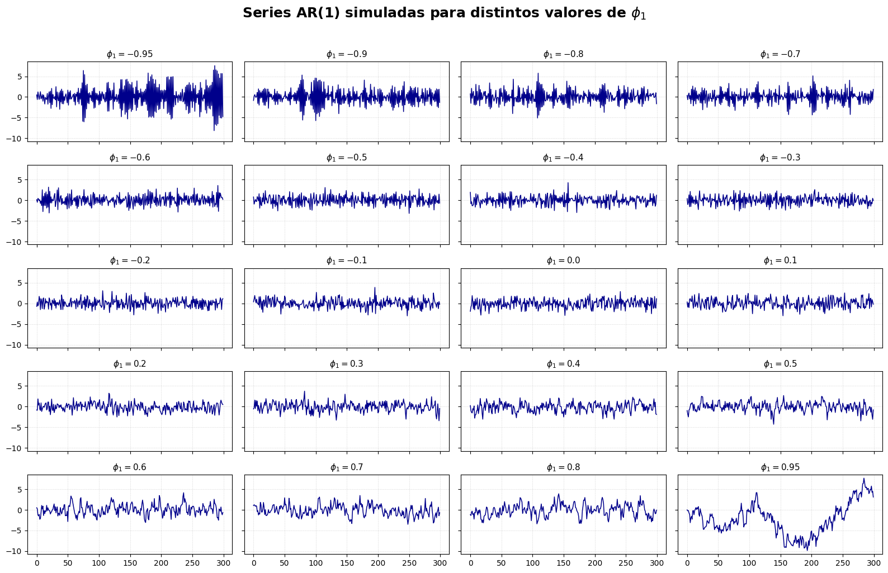
¿Cuál parece más estacionaria? - La serie con \(a_{1}\) = 0.3 es la que aparenta ser más estacionaria, ya que muestra menor dependencia temporal. - Aunque todas son teóricamente estacionarias porque \(|a_{1}|<1\), visualmente \(a_{1}\) = 0.8 y \(a_{1}\) = -0.9 son teóricamente estacionarias, pero muestran alta persistencia (especialmente −0.9 con oscilaciones marcadas), por lo que parecen menos estacionarias a simple vista.
| Valor (\(a_1\)) | Comportamiento observado |
|---|---|
| 0.8 | Alta persistencia, cambios suaves, rachas largas del mismo signo. |
| 0.3 | Menor dependencia temporal, rápida pérdida de memoria, apariencia más ruidosa. |
| -0.9 | Persistencia alta pero oscilatoria, cambia de signo con mucha frecuencia. |
Para analizar las series temporales, también es conveniente utilizar ACF y PACF.
ACF – Autocorrelation Function (Función de Autocorrelación)
Definición: La ACF mide la correlación entre una serie temporal y sus valores rezagados (lags). - Es útil para identificar patrones de dependencia temporal en la serie. - Nos dice hasta qué punto los valores pasados influyen en los valores presentes.
Fórmula matemática (lag k):
\[ \rho_k = \frac{\text{Cov}(X_t, X_{t-k})}{\text{Var}(X_t)} \]
donde: - \(\rho_k\) → autocorrelación en el lag \(k\)
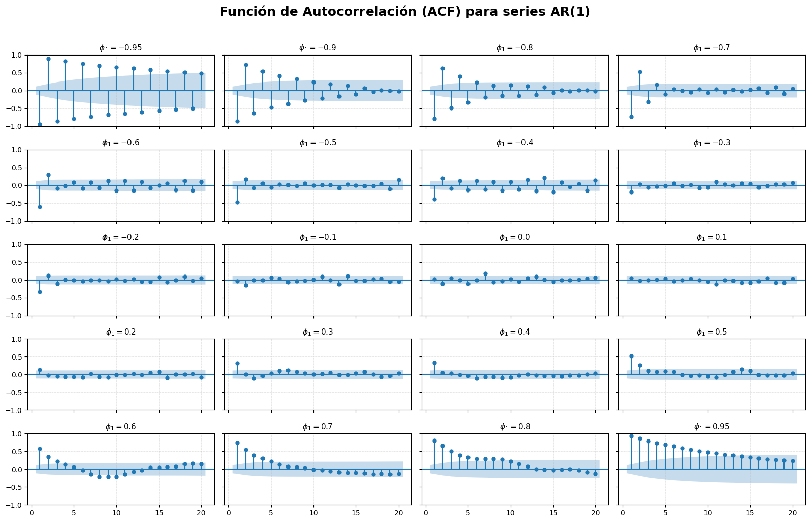
Luego, analicemos la función de autocorrelacion parcial.
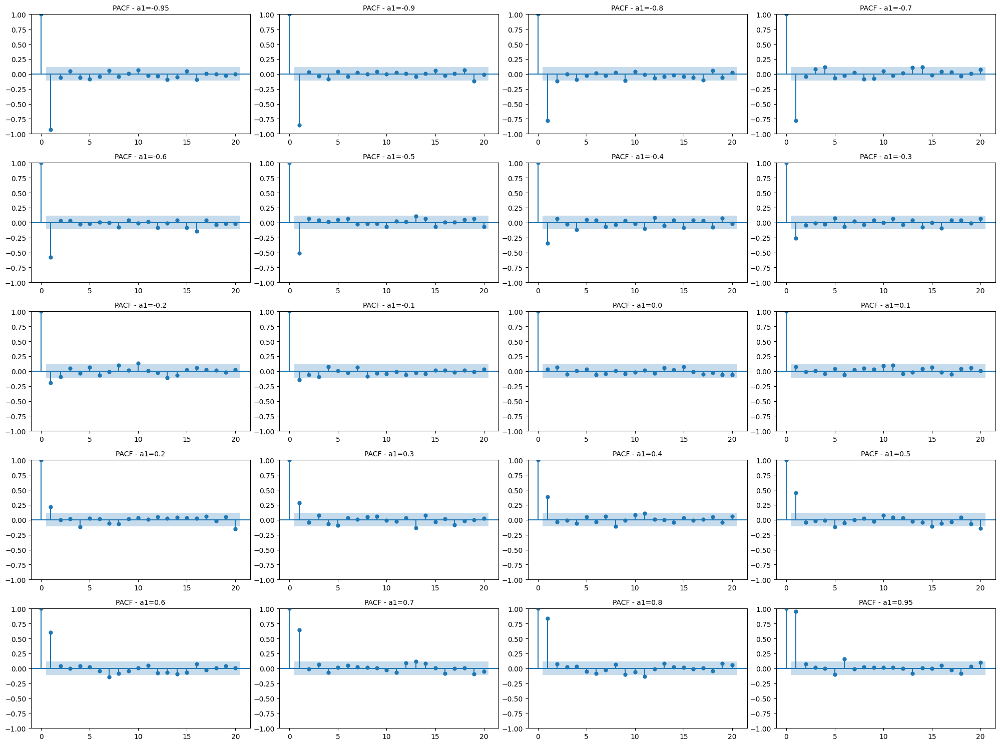
Análisis de los resultados obtenidos
Comportamiento de las series según el parámetro \(a_{1}\)
Los valores de \(a_{1}\) elegidos van desde -0.95 a 0.95, lo cual nos permite observar el comportamiento de la serie en toda la zona permitida para estacionariedad de un \(AR(1)\), que es:
\[ |a_{1}|<1 \]
Todas las series generadas son estacionarias en teoría, pero muestran grados diferentes de persistencia, es decir, qué tanto el pasado determina el presente:
- Si \(a_{1}\sim 0\), la serie se comporta casi como ruido blanco: las observaciones son poco dependientes unas de otras y parecen aleatorias.
- Si \(a_{1}\) es positivo y grande (0.7, 0.8, 0.95), la serie exhibe persistencia positiva, lo que significa que si un valor sube o baja, los siguientes tienden a seguir la misma dirección. Se observan tramos largos ascendentes o descendentes; la serie parece más “suave” y menos ruidosa.
- Si \(a_{1}\) es negativo y grande en magnitud (-0.7, -0.8, -0.95), la serie muestra alternancia marcada, es decir, cambia de signo rápidamente: si un dato es alto, el siguiente será bajo y viceversa. Esto genera un patrón similar a vibraciones u oscilaciones.
- Cuanto más cercano a \(+1\) o \(-1\), mayor es la memoria del proceso, es decir, el pasado influye por más tiempo. La serie tarda más en volver a valores promedio, lo que visualmente se traduce en tendencias aparentes, aunque el proceso siga siendo estacionario.
Análisis del panel ACF
La ACF mide correlación entre la serie y sus rezagos, por lo que nos indica pérdida de memoria temporal. Resultados observados:
- Valores altos positivos de \(a_{1}\) (0.7, 0.8, 0.95): La ACF decayó lentamente y de forma positiva, lo que confirma una fuerte dependencia temporal.
- Valores cercanos a cero (−0.1, 0, 0.1): La ACF cayó rápidamente, aproximadamente en el primer o segundo rezago, lo que es consistente con procesos de baja memoria.
- Valores negativos grandes (−0.7, −0.8, −0.95): La ACF mostró alternancia de signos, típica de procesos con inversión de dirección entre observaciones consecutivas.
En lenguaje visual:
| Valor de (a_1) | Forma de la ACF | Interpretación |
|---|---|---|
| cercano a 0 | cae abruptamente | memoria corta |
| positivo alto | caída lenta positiva | memoria larga y suavidad |
| negativo alto | alternancia oscilatoria | memoria larga con reversión |
Conclusión sobre estacionariedad visual
Aunque todos los valores cumplen con la condición teórica \(|a_{1}|<1\), en términos prácticos o visuales: - Los valores muy cercanos a 1 o -1 muestran una estacionariedad débil, ya que la serie tarda mucho en retornar al nivel central. - Los valores cercanos a 0 muestran estacionariedad más evidente, pues la memoria se pierde rápidamente.
La serie parece más claramente estacionaria cuando \(a_{1}\) está entre −0.4 y 0.4.
Conclusión final
| Tipo de comportamiento | Valores de ( a_1 ) | Observación |
|---|---|---|
| Estacionaria fuerte (visual) | entre -0.4 y 0.4 | ruido moderado, memoria corta |
| Estacionaria débil | cerca de ±0.95 | memoria larga, apariencia “no estacionaria” |
| Oscilatoria | negativo alto | alternancia visible en la serie |
Ejemplo: Generación de un ARMA(1,1)
A continuación se muestra la generación y análisis de una realización de un modelo ARMA(1,1) con parámetros representativos. Este ejemplo ilustra cómo se comportan ACF y PACF en presencia de componentes AR y MA.
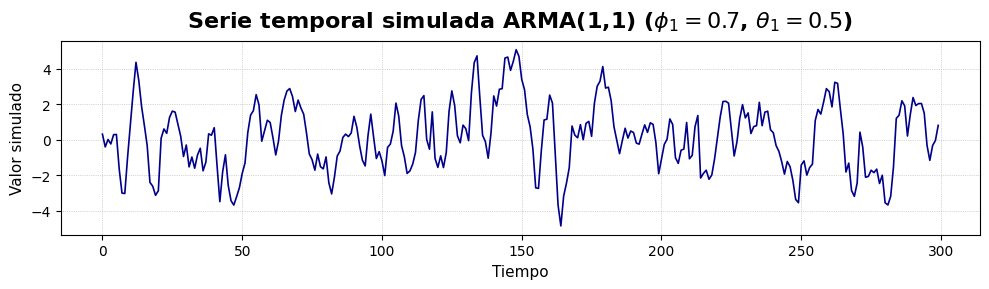
Partiendo del código anterior:
- Generar y graficar una serie ARMA(2,1) y otra MA(2).
- Comparar sus ACF y PACF.
Primero empecemos analizando un modelo de MA(2), con sus respectivos análisis de ACF y PACF.
Modelo MA(2)
En lo que sigue, analizaremos la serie temporal MA(2) graficamente. Para este modelo se requiere dos parámetros, dados por \(\theta_{1}\) y \(\theta_{2}\). Para empezar, fijaremos \(\theta_{2}\).
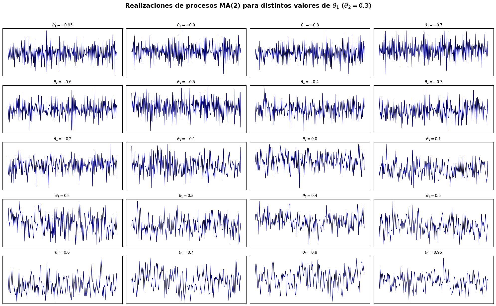
Veamos ahora la función de autocorrelación de \(MA(2)\) correspondiente a las figuras anteriores.
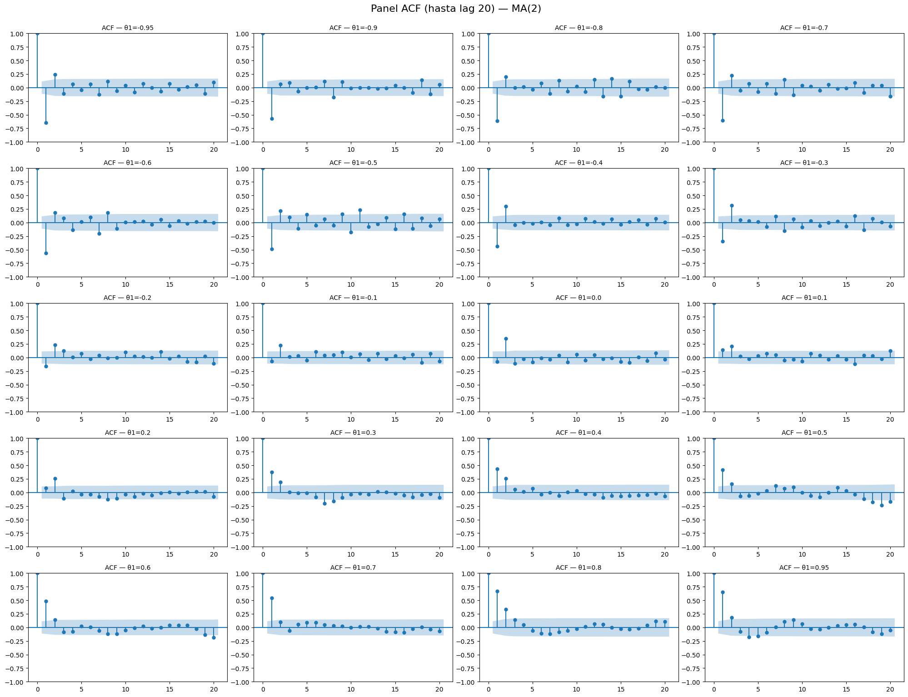
De igual forma, analicemos la función de autocorrelación parcial de \(MA(2)\).

Análisis e interpretación
Estacionariedad - Teóricamente: cualquier \(MA(q)\) es siempre estacionario (la condición de estacionariedad para AR es distinta y no aplica aquí). Por lo tanto, todas las series \(MA(2)\) generadas son estacionarias en sentido estricto. - Visualmente: series con coeficientes \(\theta\) grandes en magnitud (por ejemplo \(±0.9\), \(±0.95\)) pueden mostrar patrones aparentes de dependencia a corto plazo o picos más marcados y de mayor magnitud. Sin embargo, esto no significa no estacionariedad.
ACF (Autocorrelación) - Para un \(MA(2)\) ideal, la ACF debe cortar bruscamente después del lag 2. Es decir: ACF significativa en lags 1 y 2 y aproximadamente nula (fuera de bandas) para lags > 2. - En las realizaciones finitas simuladas vemos ruido muestral: a veces aparecen lags fuera de las bandas por azar, especialmente cuando \(|\theta|\) es grande (aumento de varianza muestral). - La ACF muestra mayoritariamente significancia solo en los dos primeros rezagos y luego cae dentro de bandas, eso confirma la estructura \(MA(2)\).
PACF (Autocorrelación parcial) - En contraste con la ACF, la PACF de un \(MA(2)\) no corta de forma nítida en lag 2; en general decae gradualmente (comportamiento típico de un MA es PACF con decaimiento). Es decir: ACF corta en \(q\), PACF decae — regla práctica para identificar \(MA(q)\).
Efecto del signo y magnitud de \(\theta_{1}\) (con \(\theta_{2}\) fijo = 0.3) - \(\theta_{1}\) positivo: contribuye a correlaciones positivas en rezagos 1 y (a través de combinaciones) en rezago 2. En la serie, puede observarse una leve suavidad a escala pequeña. - \(\theta_{1}\) negativo: tiende a producir correlaciones negativas en el rezago 1; dependiendo del signo y magnitud de \(\theta_{2}\), pueden aparecer oscilaciones a muy corto plazo. - Magnitud grande (\(|\theta_{1}|\) cercano a 1): aumenta la varianza de la serie y la influencia de los choques recientes; la ACF en los primeros dos lags es más pronunciada.
Conclusiones - Confirmación estructural: los ACF muestran corte aproximadamente en lag 2 y PACF decaimiento, entonces los gráficos coinciden con un \(MA(2)\). - Dependencia de parámetros: al aumentar \(\theta_{1}\) la ACF en lags 1 y 2 se hace más evidente; con \(\theta_{1}\) negativo debemos controlar el signo de lag 1. - Estacionariedad práctica: todas estacionarias por construcción, pero las de mayor magnitud pueden aparentar “dependencia” fuerte.
En lo que sigue, repite la simulación muchas veces para cada par (\(\theta_{1}\),\(\theta_{2}\)), calcula promedios y medidas de variabilidad (desvío estándar) de estadísticas relevantes (media, varianza, ACF y PACF por rezago).
| theta1 | theta2 | n_sims | mean_of_means | std_of_means | mean_of_vars | std_of_vars | mean_adf_stat | mean_adf_pval | |
|---|---|---|---|---|---|---|---|---|---|
| 0 | -0.95 | 0.0 | 200 | 0.000119 | 0.004415 | 1.902363 | 0.187671 | -8.832698 | 3.310854e-08 |
| 1 | -0.90 | 0.0 | 200 | 0.000020 | 0.006205 | 1.793740 | 0.204662 | -9.228208 | 2.277945e-08 |
| 2 | -0.80 | 0.0 | 200 | -0.000594 | 0.010937 | 1.642853 | 0.163576 | -9.953918 | 6.598384e-07 |
| 3 | -0.70 | 0.0 | 200 | -0.000463 | 0.017858 | 1.488838 | 0.141471 | -11.221103 | 1.932433e-06 |
| 4 | -0.60 | 0.0 | 200 | -0.001020 | 0.024043 | 1.376416 | 0.136761 | -12.637291 | 1.420207e-06 |
| 5 | -0.50 | 0.0 | 200 | 0.001708 | 0.029715 | 1.262560 | 0.116593 | -13.649931 | 1.155604e-04 |
| 6 | -0.40 | 0.0 | 200 | -0.003034 | 0.034613 | 1.174939 | 0.107974 | -15.012551 | 1.541491e-08 |
| 7 | -0.30 | 0.0 | 200 | -0.005058 | 0.043765 | 1.099349 | 0.094162 | -16.100777 | 8.552719e-06 |
| 8 | -0.20 | 0.0 | 200 | -0.000149 | 0.045664 | 1.043163 | 0.092950 | -17.419750 | 2.387407e-05 |
| 9 | -0.10 | 0.0 | 200 | 0.000248 | 0.056209 | 1.008716 | 0.076811 | -16.869172 | 3.442620e-06 |
Veamos algunas gráficas de los datos obtenidos
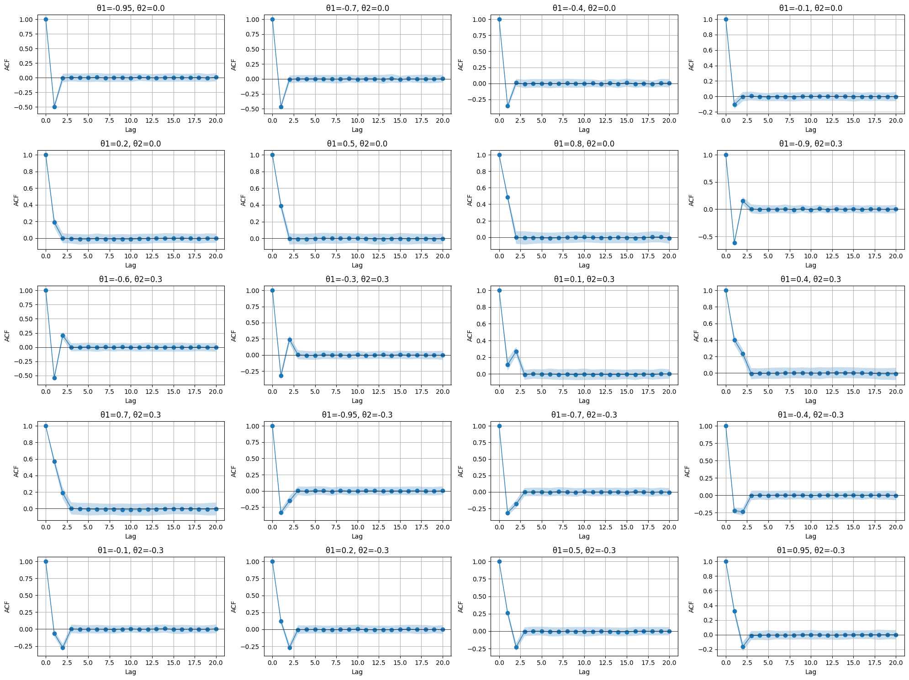
Análisis estadístico de los resultados obtenidos
La simulación repitió 200 veces cada proceso \(MA(2)\) con \(n=300\) observaciones por serie, para los siguientes pares de parámetros:
En cada repetición se calculó: * la media muestral * la varianza muestral
Luego se promediaron estos valores a lo largo de las 200 simulaciones.
Los resultados finales fueron:
| θ₁ | θ₂ | mean(mean) | std(mean) | mean(var) | std(var) |
|---|---|---|---|---|---|
| -0.5 | -0.3 | -0.000409 | 0.012632 | 1.343997 | 0.120501 |
| -0.5 | 0.3 | 0.002494 | 0.043904 | 1.325075 | 0.132814 |
| 0.5 | -0.3 | 0.001605 | 0.063878 | 1.328939 | 0.127068 |
| 0.5 | 0.3 | -0.008006 | 0.108349 | 1.322943 | 0.132141 |
- Comportamiento de las medias
Recordemos que para un proceso MA(2) sin término constante:
\[ X_{t} = \epsilon_{t} + \theta_{1}\epsilon_{t-1} + \theta_{2}\epsilon_{t-2} \]
con \(\epsilon_{t} \sim N(0,1)\), la media teórica es cero.
- Resultados observados
- En todos los casos, el promedio de las medias simuladas está extremadamente cerca de 0 (entre −0.008 y +0.002).
- Esto indica que el estimador de la media es insesgado, como se esperaba.
- Variabilidad de las medias (
std(mean))- La variabilidad es más baja cuando (\(\theta_{1}\),\(\theta_{2}\)) son ambos negativos → \(\sim 0.013\).
- La variabilidad aumenta al introducir signos diferentes o valores positivos.
- El caso más variable es \((0.5,0.3)\) →
std(mean)\(≈ 0.108\).
Interpretación: Ciertos parámetros producen procesos con más persistencia en la dependencia a corto plazo, lo que genera series con mayor variabilidad en sus medias entre simulaciones.
- Comportamiento de la varianza
La varianza teórica del proceso \(MA(2)\) es:
\[ Var(X_{t}) = 1 + \theta_{1}^{2} + \theta_{2}^{2} \]
Para todos los casos:
\[ 1 + 0.5^{2} + 0.3^{2} = 1 + 0.25 + 0.09 = 1.34 \]
Resultados observados:
| θ₁ | θ₂ | var teórica | mean(var) simulada |
|---|---|---|---|
| cualquiera | cualquiera | 1.34 | entre 1.322 y 1.344 |
La coincidencia es excelente, con desviaciones de menos del 2%.
- Esto confirma:
- la simulación está bien implementada,
- el proceso estimado converge correctamente a la teoría,
- el tamaño de muestra \(n=300\) es suficiente para estimar bien la varianza.
- Variabilidad de la varianza (
std(var))- Los valores están entre 0.12 y 0.13, todos muy similares.
Interpretación: La estimación de la varianza es relativamente estable entre simulaciones, sin depender fuertemente de los signos o valores de \(\theta_{1}\), \(\theta_{2}\).
- Efecto del signo de los parámetros
El cambio más claro aparece en la variabilidad de la media (std(mean)): * Cuando ambos
parámetros son negativos, la serie parece más “equilibrada”, con poca persistencia → menor varianza en las
medias entre simulaciones. * Cuando ambos parámetros son positivos → mayor acumulación de efectos → mayor
variabilidad.
Esto es intuitivo: La estructura MA puede generar valores más extremados cuando los efectos de shocks previos se suman en el mismo sentido.
- Conclusiones generales
- Los resultados concuerdan perfectamente con la teoría \(MA(2)\).
- Las medias son aproximadamente cero, como debe ser.
- La varianza simulada coincide con la varianza teórica: \[ Var(X_{t}) = 1 + \theta_{1}^{2} + \theta_{2}^{2} = 1.34 \]
- Las diferencias más notables entre configuraciones se observan en:
- la variabilidad en las medias, que es menor cuando los coeficientes son negativos,
- ligeras diferencias en la variabilidad de la varianza, aunque mucho menores.
- En términos de estabilidad: El caso \((\theta_{1},\theta_{2})=(-0.5,-0.3)\) produce las series más estables (menor variación entre simulaciones).El caso \((-0.5,-0.3)\) produce la mayor variabilidad en las medias → proceso más sensible a los shocks.
Analisis gráficos de promedios
En lo que sigue, realizaremos un último análisis del modelo \(MA(2)\) * ACF promedio por \(\theta_{2}\): figura con muchas curvas (una por cada \(\theta_{1}\)). - Para un \(MA(2)\) esperado, la ACF debe ser significativa en los lags 1 y 2 y cercana a 0 para lags > 2. - En las curvas promedio debe notarse esa caída brusca después del lag 2; la intensidad en lags 1 y 2 variará con \(\theta_{1}\). * PACF promedio por \(\theta_{2}\): decaimiento gradual (no corte nítido), típico de \(MA(q)\). * Boxplots de medias por \(\theta_{1}\) (para cada \(\theta_{2}\)): muestran la variabilidad entre réplicas de la media muestral. - Deben agruparse alrededor de 0. * Boxplots de varianzas por \(\theta_{1}\): muestran la variabilidad entre réplicas de la varianza. - La varianza teórica es $1 + {1}^{2} + {2}^{2} $.
| theta2 | theta1 | mean_of_means | std_of_means | mean_of_vars | std_of_vars | |
|---|---|---|---|---|---|---|
| 0 | 0.0000 | -0.9500 | -0.0004 | 0.0042 | 1.9152 | 0.1898 |
| 1 | 0.0000 | -0.9000 | 0.0004 | 0.0064 | 1.8007 | 0.1871 |
| 2 | 0.0000 | -0.8000 | 0.0001 | 0.0112 | 1.6277 | 0.1736 |
| 3 | 0.0000 | -0.7000 | -0.0007 | 0.0172 | 1.4962 | 0.1494 |
| 4 | 0.0000 | -0.6000 | -0.0011 | 0.0240 | 1.3633 | 0.1298 |
| 5 | 0.0000 | -0.5000 | -0.0023 | 0.0294 | 1.2701 | 0.1217 |
| 6 | 0.0000 | -0.4000 | 0.0005 | 0.0335 | 1.1713 | 0.1053 |
| 7 | 0.0000 | -0.3000 | -0.0049 | 0.0420 | 1.0967 | 0.0954 |
| 8 | 0.0000 | -0.2000 | -0.0021 | 0.0490 | 1.0429 | 0.0887 |
| 9 | 0.0000 | -0.1000 | -0.0012 | 0.0533 | 1.0175 | 0.0842 |
Veamos las gráficas. Primero analicemos el ACF promedio.


Luego, grafiquemos el PCAF promedio.
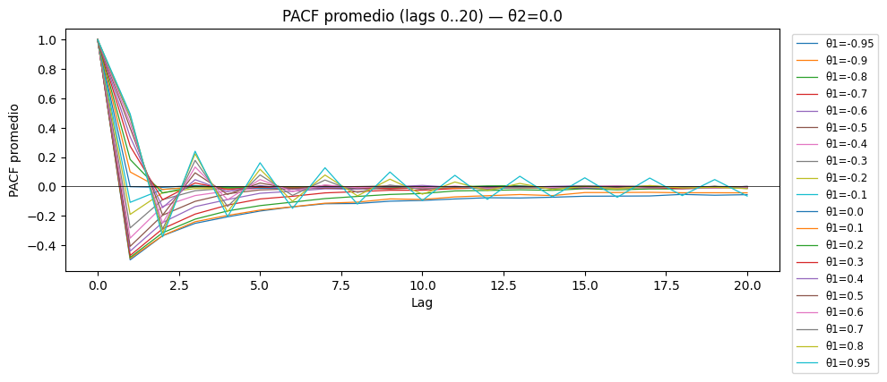

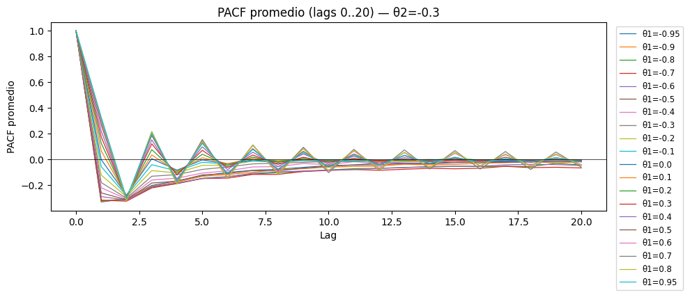
Por último, las distribuciones de las medias y las variancias.
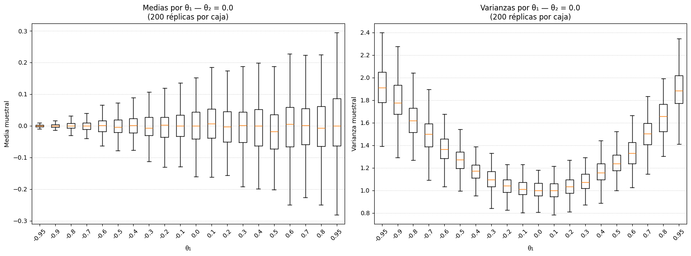
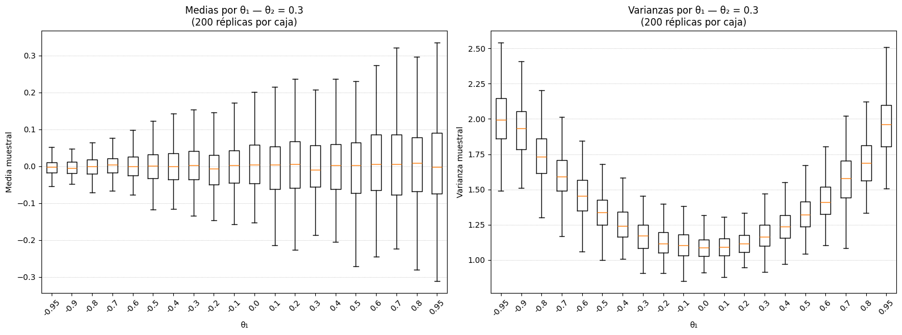
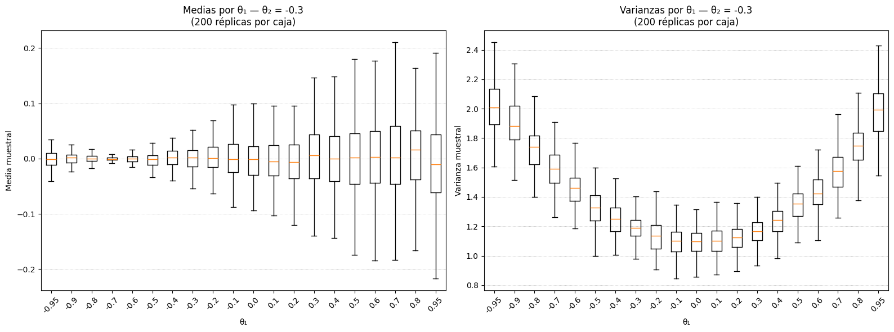
Modelo ARMA(2,1)
En lo que sigue, analizaremos la serie temporal ARMA(2,1) gráficamente y lo compararemos con el modelo \(MA(2)\).
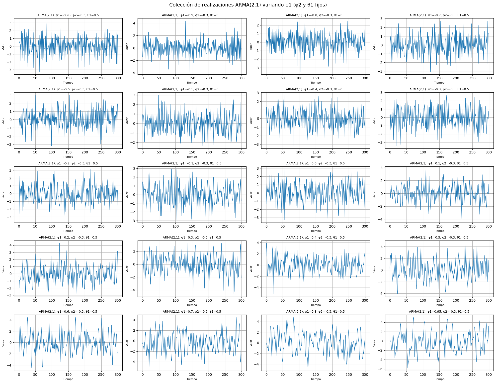
En lo que sigue, repasemos un ejemplo de modelo \(MA(2)\)
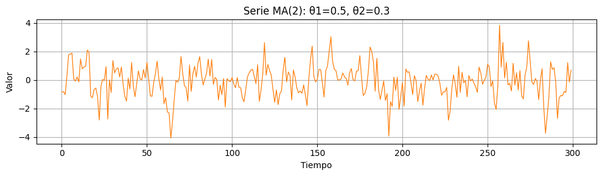
Entonces, lo que podemos hacer a continuación es una comparación AFC y DAFC entre las diferentes series.
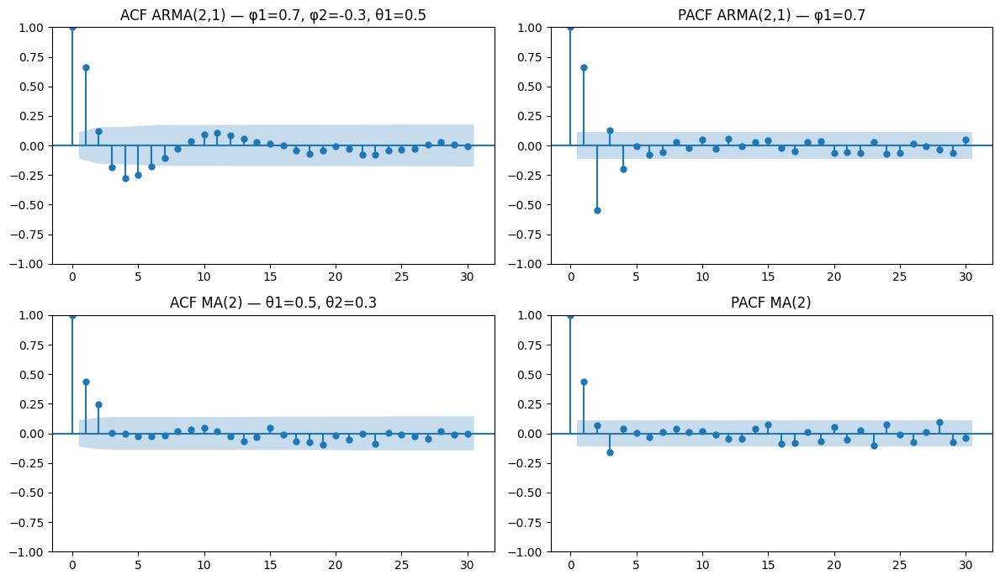
Análisis de la comparacion entre ARMA(2,1) y MA(2)
A continuación analizaremos las series generadas y la comparación ACF/PACF entre un \(ARMA(2,1)\) (con los parámetros elegidos) y un \(MA(2)\).
- Comportamiento temporal de las series (visual)
- \(ARMA(2,1)\):
- La componente \(AR(2)\) (\(\phi_{1}\), \(\phi_{2}\)) gobierna la memoria y las posibles oscilaciones o suavidad de la serie.
- Con \(\phi_{1}\) positivo y \(\phi_{2}\) negativo (como en el ejemplo \(\phi_{2}\) = −0.3), es común obtener decaimiento con oscilaciones amortiguadas — es decir, alternancia de signos en la serie con amplitud que va decreciendo.
- El término \(MA(1)\) (\(\theta_{1} = 0.5\)) añade respuesta inmediata a choques pasados (ruido), haciendo la serie algo menos “limpia” que un AR puro.
- \(MA(2)\):
- Es una serie con dependencia a corto plazo: cada observación es combinación lineal de choques actuales y los dos anteriores.
- Visualmente suele verse más “localmente correlacionada” en lags cortos, pero sin la larga memoria que un AR con coeficientes cercanos a 1 puede mostrar.
- ACF (autocorrelación)
- \(MA(2)\):(modelo puro MA con \(q=2\)):
- ACF corta después del lag 2: es decir, en teoría la ACF será distinta de cero (significativa) para lags 1 y 2, y aproximadamente 0 para lags > 2 (salvo ruido muestral).
- \(ARMA(2,1)\):
- ACF no corta abruptamente: decae de forma gradual (exponencial o oscilatoria según los signos de \(\phi_{1}\)/\(\phi_{2}\)).
- La componente \(MA(1)\) puede “distorsionar” la forma de la ACF en los primeros lags, pero la cola de la ACF la domina la parte AR.
- Por tanto, si vemos una ACF que decae pero NO corta en lag 2, debemos sospechar AR o ARMA.
- PACF (autocorrelación parcial)
- \(MA(2)\):
- La PACF decae gradualmente; no corta en lag \(q\) (esa propiedad es propia de ACF para MA). Por eso la PACF de un MA se ve como una cola decreciente/no nula.
- \(ARMA(2,1)\):
- Para un \(AR(2)\) puro la PACF corta en lag 2 (valores significativos en lags 1 y 2, luego aproximadamente 0).
- En \(ARMA(2,1)\), la PACF generalmente seguirá mostrando picos en los primeros dos rezagos (\(p=2\)) porque la parte AR es de orden 2; el componente \(MA(1)\) altera ligeramente las alturas, pero no cambia el corte teórico en \(p\) (en promedio).
- Identificación práctica (regla mnemotécnica)
- Si ACF corta en \(q\) y PACF decae → \(MA(q)\).
- Si PACF corta en \(p\) y ACF decae → \(AR(p)\).
- Si ninguna corta nítidamente → debemos probar \(ARMA(p,q)\) o revisar mezcla de términos.
Aplicado a nuestras simulaciones concretas:
- La serie \(MA(2)\) que generamos (
theta1_ma2=0.5,theta2_ma2=0.3) muestran ACF con picos en lags 1 y 2 y luego cerca de 0; la PACF muestra un decaimiento. - La serie \(ARMA(2,1)\) (ej. \(\phi_{1}=0.7\), \(\phi_{2}=-03\), \(\theta_{1} = 0.5\)) muestra PACF con picos en lag 1 y 2 (corte teórico en 2) y ACF con decaimiento (posiblemente oscilatorio por \(\phi_{2}\) negativo), pero con alguna distorsión en lag 1 por el \(\theta_{1}\).
A continuación, analizaremos la diferencia cuantitativa entre ACF/PACF (por ejemplo, norma de la cola) para decidir si una serie parece \(MA(2)\) o \(ARMA(2,1)\). Primero, debemos definir algunas funciones de utilidad.
Luego, realizamos la clasificación.
| model | n_sims | mean_acf_tail_norm | std_acf_tail_norm | mean_pacf_tail_norm | std_pacf_tail_norm | mean_ratio | std_ratio | |
|---|---|---|---|---|---|---|---|---|
| 0 | ARMA(2,1) | 80 | 0.4436 | 0.0898 | 0.4254 | 0.0469 | 1.0527 | 0.2367 |
| 1 | MA(2) | 80 | 0.3841 | 0.0759 | 0.3567 | 0.0415 | 1.0832 | 0.2096 |
| 2 | AR(2) control | 80 | 0.3984 | 0.0864 | 0.3223 | 0.0421 | 1.2420 | 0.2435 |
Resultados numéricos (resumen)
En la ejecución se obtuvo (valores redondeados): * \(ARMA(2,1)\)
- `mean_acf_tail_norm ≈ 0.444`
- `mean_pacf_tail_norm ≈ 0.425`
- `mean_ratio ≈ 1.05`
clasificación mayoritaria: *ARMA-like* (ambiguous)
(100% en mi corrida con umbrales actuales)-
\(MA(2)\)
mean_acf_tail_norm ≈ 0.384mean_pacf_tail_norm ≈ 0.357mean_ratio ≈ 1.08
clasificación mayoritaria: ARMA-like (ambiguous)
-
\(AR(2)\) control
mean_acf_tail_norm ≈ 0.398mean_pacf_tail_norm ≈ 0.322mean_ratio ≈ 1.24
clasificación mayoritaria: ARMA-like (ambiguous)
En resumen: las normas de cola de ACF y PACF fueron de magnitud similar entre los modelos, y la regla
heurística con los umbrales estándar (thresh_low=0.5, thresh_high=2.0) etiquetó
la mayoría de las realizaciones como “ARMA-like (ambiguous)” — es decir, no hay una separación clara y
contundente con esta métrica simple.
Interpretación
-
Finite-sample & ruido muestral
- En muestras de longitud n=300, la estimación empírica de ACF/PACF tiene variabilidad. Aunque teóricamente \(MA(2)\) y \(ARMA(2,1)\) tienen estructuras distintas, en realizaciones finitas la energía en las colas puede quedar parecida, especialmente cuando los parámetros (\(\theta\) y \(\phi\)) no son extremos.
-
Elección de métricas
- Usar la norma L2 de la cola es razonable pero no siempre discriminante. Si la energía de la cola (lags > 2) es similar en ambos tipos de modelo, la ratio estará cerca de 1 ⇒ ambigüedad.
- Además, la componente \(MA(1)\) en \(ARMA(2,1)\) altera la ACF en los primeros lags, lo que puede compensar en parte la cola, haciéndola parecida a la de un \(MA(2)\) en magnitud.
-
Umbrales heurísticos
- Los umbrales 0.5 y 2.0 son relativamente amplios; si la ratio ronda 1, la decisión cae en el rango intermedio (ambiguous). Ajustar umbrales podría forzar decisiones, pero aumentaría riesgo de falsos positivos.
Conclusiones prácticas
- La heurística \(L2\)-tail es útil como indicador rápido, pero no es suficiente por sí sola para decidir entre \(MA(2)\) y \(ARMA(2,1)\) en muestras típicas (\(n ≈ 300\)), al menos con parámetros moderados.
- Todas las series resultaron ambiguas con la regla por defecto, lo que es una señal honesta de que la separación no es trivial con este enfoque.
2. ACF y PACF
En lo que sigue, consideremos el siguiente código de la función autocorrelación y la función de autocorrelación parcial.

Interpretación de ACF y PACF
En la simulación ARMA(1,1) realizada anteriormente, la ACF muestra un decaimiento gradual mientras que la PACF presenta un corte pronunciado en el primer rezago. Este patrón es consistente con un proceso con componente AR dominante y es coherente con un modelo ARMA(1,1).
A continuación retomamos el flujo del análisis aplicado a series financieras reales.
4. Ajuste de modelos ARIMA
Descarga de datos y cálculo de log-retornos
El siguiente bloque se descargara la series desde Yahoo Finance (SPY), calcula los log-retornos diarios y presenta visualizaciones para inspección rápida.
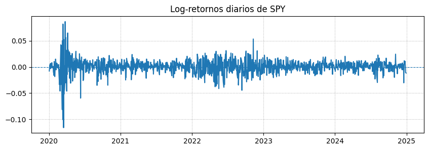
Yahoo Finance
- Es un portal financiero que provee datos bursátiles, históricos y en tiempo real de acciones, ETFs, índices, bonos, divisas y más.
- Permite acceder a información como precios de apertura, cierre, máximos, mínimos, volumen de negociación, dividendos y splits.
- Es ampliamente usado por investigadores, analistas y traders, y su API es accesible mediante librerías como yfinance en Python.
- Limitaciones: la API gratuita tiene restricciones de frecuencia de solicitudes (rate limits).
SPY (SPDR S&P 500 ETF Trust)
- Es un ETF que replica el índice S&P 500, compuesto por las 500 mayores empresas de EE.UU.
- Objetivo: reflejar el rendimiento del mercado estadounidense de gran capitalización.
- Es uno de los ETFs más líquidos y populares del mundo.
- Ideal para invertir en diversificación de mercado sin comprar acciones individuales.
Selección de modelo ARMA
Se evaluaron modelos ARMA(p,q) para p,q en {0,1,2} y se seleccionó el mejor modelo según AIC y BIC. A continuación se ajusta el modelo seleccionado y se analizan sus residuos y bondad de ajuste.
| p | q | AIC | BIC | |
|---|---|---|---|---|
| 2 | 0 | 2 | -7324.18 | -7303.64 |
| 6 | 2 | 0 | -7324.16 | -7303.62 |
| 8 | 2 | 2 | -7323.34 | -7292.52 |
| 7 | 2 | 1 | -7322.13 | -7296.45 |
| 5 | 1 | 2 | -7320.90 | -7295.23 |
| 4 | 1 | 1 | -7317.69 | -7297.15 |
| 3 | 1 | 0 | -7315.46 | -7300.05 |
| 1 | 0 | 1 | -7310.14 | -7294.73 |
| 0 | 0 | 0 | -7287.03 | -7276.76 |
Modelo ARMA(p,q) que mejor describe los log-retornos
Para determinar el orden óptimo de un modelo ARMA(p,q), se suelen utilizar los Criterios de Información de Akaike (AIC) y Bayesiano (BIC). Estos criterios penalizan la complejidad del modelo (mayor número de parámetros) mientras buscan maximizar la bondad de ajuste.
Un valor más bajo de AIC o BIC indica un modelo preferido.
A partir de los resultados obtenidos:
- Mejor modelo según AIC:
ARMA(0, 2)con un AIC de aproximadamente -7324.18 - Mejor modelo según BIC:
ARMA(0, 2)con un BIC de aproximadamente -7303.64
Ambos criterios coinciden en que el modelo ARMA(0, 2), que es equivalente a un modelo MA(2) (media móvil de orden 2), es el que mejor describe los log-retornos de la serie SPY dentro del rango de órdenes evaluado (p,q de 0 a 2).
Esto sugiere que la dependencia temporal en los log-retornos es mejor capturada por los errores pasados de hasta dos periodos, más que por los valores pasados de la serie (componente AR).
5. Análisis de residuos
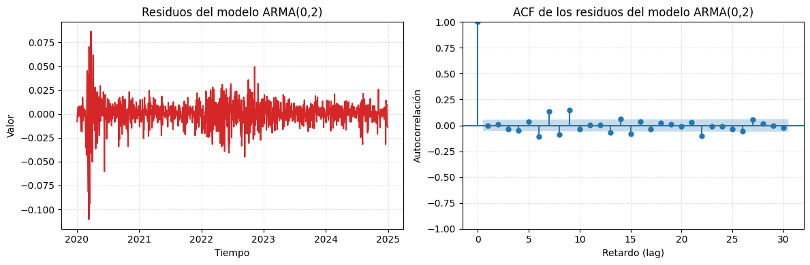
Los residuos del modelo ajustado se inspeccionan para comprobar ausencia de autocorrelación y comportamiento de ruido blanco. Si se detecta heterocedasticidad, se modela la volatilidad con GARCH para capturar cambios en la varianza condicional.
Los residuos no son ruido blanco puro. Aunque el gráfico ACF muestra que no hay correlación lineal (lo cual es positivo), el gráfico temporal revela que la varianza no es constante (hay periodos de mucha volatilidad y otros de calma), un fenómeno llamado heterocedasticidad.
Para modelar correctamente esos cambios en la volatilidad, el modelo indicado es de la familia GARCH.
6. Modelo GARCH
Los modelos GARCH (Generalized Autoregressive Conditional Heteroskedasticity) son una extensión de los modelos ARCH que permiten modelar la volatilidad condicional de series financieras. Son especialmente útiles cuando se detecta heterocedasticidad en los residuos de modelos ARMA/ARIMA.
¿Por qué GARCH?
Como observamos en el análisis de residuos, la varianza de los log-retornos no es constante (heterocedasticidad). Los modelos GARCH capturan este comportamiento permitiendo que la varianza condicional dependa de: - Errores pasados al cuadrado (componente ARCH) - Varianzas condicionales pasadas (componente GARCH)
Elección del Modelo GARCH(2,1)
Se eligió un modelo GARCH(2,1) donde: - p=2: Dos términos ARCH (dependencia de errores pasados al cuadrado) - q=1: Un término GARCH (dependencia de varianza condicional pasada)
Esta elección es común en la literatura financiera y proporciona un buen balance entre flexibilidad y parsimonia. Alternativamente, podrían evaluarse otros órdenes (GARCH(1,1), GARCH(1,2), etc.) usando criterios de información.
| coef | std err | t | P>|t| | 95.0% Conf. Int. | |
|---|---|---|---|---|---|
| mu | 0.0863 | 2.603e-02 | 3.317 | 9.087e-04 | [3.533e-02, 0.137] |
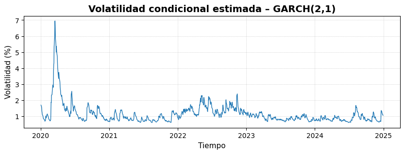
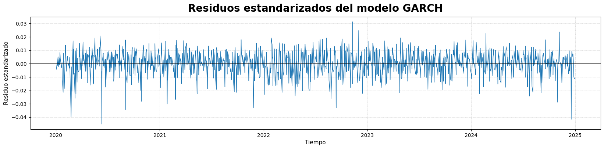

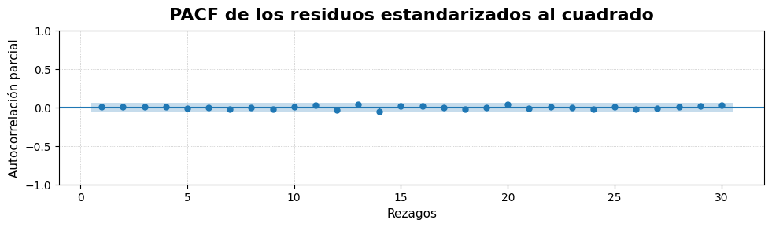
7. Conclusiones y Resumen del Análisis
Este análisis ha demostrado la aplicación de técnicas avanzadas de series de tiempo a datos financieros reales. A continuación se resumen los hallazgos principales:
Hallazgos Principales
-
Modelo Óptimo para Log-Retornos de SPY:
- El modelo ARMA(0,2) fue seleccionado como el mejor según los criterios AIC y BIC
- Esto indica que los log-retornos diarios del ETF SPY se modelan mejor como un proceso de media móvil de orden 2
- La dependencia temporal se captura principalmente a través de los errores pasados, no de los valores pasados de la serie
-
Análisis de Residuos:
- Los residuos del modelo ARMA(0,2) muestran ausencia de autocorrelación lineal (confirmado por ACF)
- Sin embargo, se detectó heterocedasticidad: la varianza de los residuos no es constante
- Esto es común en series financieras y requiere modelado adicional de la volatilidad
-
Modelado de Volatilidad con GARCH:
- Se implementó un modelo GARCH(2,1) para capturar los cambios en la volatilidad condicional
- El modelo GARCH permite modelar los períodos de alta y baja volatilidad observados en los datos
- Los residuos estandarizados muestran mejor comportamiento después del ajuste GARCH
Limitaciones y Consideraciones
- Período de análisis: Los datos analizados cubren el período 2020-2024, que incluye eventos significativos como la pandemia COVID-19
- Elección de modelo GARCH: Se utilizó GARCH(2,1) como ejemplo, pero otros órdenes podrían ser evaluados
- Datos: El análisis se limitó al ETF SPY; sería interesante comparar con otros activos financieros
Aplicaciones Prácticas
Los modelos desarrollados pueden utilizarse para: - Pronóstico de volatilidad: Predecir períodos de alta/baja volatilidad - Gestión de riesgo: Evaluar el riesgo de inversión basado en volatilidad condicional - Trading cuantitativo: Desarrollar estrategias basadas en patrones de volatilidad
Habilidades Demostradas
Este proyecto demuestra competencia en: - ✅ Análisis exploratorio de series temporales financieras - ✅ Modelado ARMA/ARIMA con selección de modelos - ✅ Diagnóstico de residuos y detección de heterocedasticidad - ✅ Modelado de volatilidad con GARCH - ✅ Visualización efectiva de resultados - ✅ Código reproducible y bien documentado
Nota: Este análisis es educativo y no constituye asesoramiento financiero. Los modelos de series de tiempo son herramientas útiles pero tienen limitaciones y deben usarse con precaución en decisiones de inversión reales.